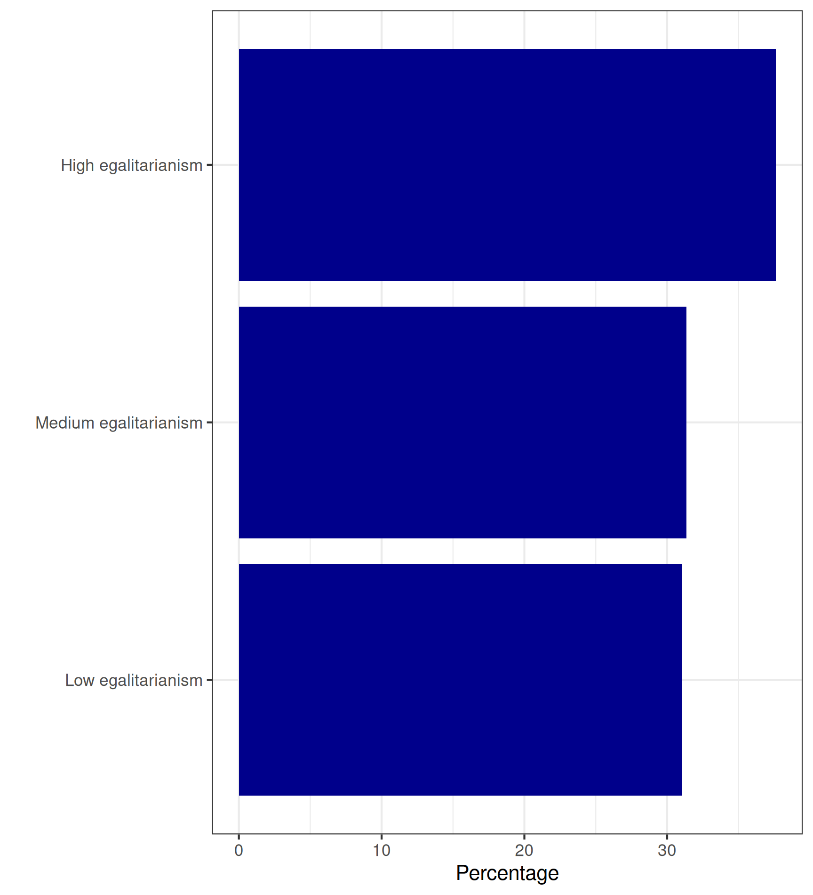

[1] 237 222 186 115 200 232 164 131 125 145 217 165 164 181 175 233 243 233
[19] 138 146 147 211 133 185 164 127 193 189 178 249 181 231 162 108 186 243
[37] 193 106 124 105 114 237 111 163 196 174 182 240 244 166 164 190 236 204
[55] 122 121 135 190 244 210 201 246 121 127 229 154 109 113 169 241 191 121
[73] 171 105 205 159 192 209 167 166 169 219 146 218 104 220 137 132 218 160
[91] 229 208 156 244 160 112 129 136 135 234 214 176 137 228 159 245 170 215
[109] 195 118 110 228 133 123 159 235 166 221 224 141 123 200 209 142 235Today’s Agenda
Introduction to Univariate Analyses
- Calculating and analyzing descriptive statistics
Justin Leinaweaver (Spring 2026)
What do we do with data?
Data as numbers…
Data as words or symbols…
[1] low high medium low high high medium high high medium
[11] high medium high high high low high low medium medium
[21] low medium high medium low medium high low medium high
[31] medium medium low low medium high low medium medium medium
[41] medium low medium medium medium high low low high medium
[51] medium medium medium low high low medium low low high
[61] high medium low low high
Levels: low medium highDefining Statistics: Level 1
Statistics offers tools we can use to summarize data
Find the “middle” of a series of numbers…
[1] 176.624Count the frequency of the words…
d2
high low medium
20 19 26 Defining Statistics: Level 2
Statistics helps us draw inferences from sample to population

Create an R Script and name it “Descriptive Statistics.R”
Option 1: “File” → “New File” → “R Script”
Option 2:

Add the following to your notes:
# Tools for describing a nominal variable:
# Frequency table (counts and/or proportions)
# Tools for describing an ordinal variable:
# Frequency table (counts, proportions and/or cumulative proportions)
# Tools for describing an interval-level variable:
# Mean
# Median
# Standard deviation
# The range (minimum to maximum)
# Percentiles
# The interquartile range (25th to 75th percentile)| Value | Frequency | Percentage | Cumulative |
|---|---|---|---|
| Low egalitarianism | 1121 | 31.0 | 31.0 |
| Medium egalitarianism | 1133 | 31.4 | 62.4 |
| High egalitarianism | 1359 | 37.6 | 100.0 |

Modal value: “High”
Median value: “Medium”
Dispersion: Low (?)

If you are analyzing a nominal variable:
1. Make a frequency table: table()
audi chevrolet dodge ford honda hyundai jeep land rover
18 19 37 25 9 14 8 4
lincoln mercury nissan pontiac subaru toyota volkswagen
3 4 13 5 14 34 27 2. Convert to proportions: proportions()
audi chevrolet dodge ford honda hyundai jeep land rover
0.07692308 0.08119658 0.15811966 0.10683761 0.03846154 0.05982906 0.03418803 0.01709402
lincoln mercury nissan pontiac subaru toyota volkswagen
0.01282051 0.01709402 0.05555556 0.02136752 0.05982906 0.14529915 0.11538462 If you are analyzing an ordinal variable:
1. Make a frequency table: table()
2. Convert to proportions: proportions()
3. Sum the proportions: cumsum()
Exercise 5: Interval-Level Variables
| Statistic | Mike Pence | Tim Kaine |
|---|---|---|
| Mean | 48.2 | 46.0 |
| Standard deviation | 29.4 | 25.9 |
| Mode | 50 | 50 |
| 25th percentile | 30 | 30 |
| 50th percentile (median) | 50 | 50 |
| 75th percentile | 70 | 60 |
Exercise 6: Interval-Level Variables
| Respondent | Opinion | Deviation | Squared |
|---|---|---|---|
| 1 | 0 | -10 | 100 |
| 2 | 6 | -4 | 16 |
| 3 | 8 | -2 | 4 |
| 4 | 10 | 0 | 0 |
| 5 | 12 | 2 | 4 |
| 6 | 14 | 4 | 16 |
| 7 | 20 | 10 | 100 |
Mean (Opinion) = 10
Sample Variance = 40
Sample Standard Deviation ≈ 6.32
Exercise 6: Interval-Level Variables
| Respondent | Opinion | Deviation | SD | Standardized |
|---|---|---|---|---|
| 1 | 0 | -10 | 6.3 | -1.6 |
| 2 | 6 | -4 | 6.3 | -0.6 |
| 3 | 8 | -2 | 6.3 | -0.3 |
| 4 | 10 | 0 | 6.3 | 0.0 |
| 5 | 12 | 2 | 6.3 | 0.3 |
| 6 | 14 | 4 | 6.3 | 0.6 |
| 7 | 20 | 10 | 6.3 | 1.6 |
\[ \text{Standardized Scores (z-scores)} = \frac{(x - \mu)}{\sigma} \]
If you are analyzing an interval-level variable:
1. Use summary() for a selection of descriptive stats
2. Use sd() for the standard deviation
3. You can also access the individual stats directly with:
- mean(), median(), min(), max(), quantile()
Univariate Analyses: Descriptive Statistics
# Tools for describing a nominal variable:
# Frequency table (counts and/or proportions)
# Tools for describing an ordinal variable:
# Frequency table (counts, proportions and/or cumulative proportions)
# Tools for describing an interval-level variable:
# Mean
# Median
# Standard deviation
# The range (minimum to maximum)
# Percentiles
# The interquartile range (25th to 75th percentile)What proportion of US presidents since 1953 have been Republicans? (Built-in Data: presidential, Variable: party)
Why are the mean and median total populations in the midwest so different from each other? (Built-in Data: midwest, Variable: poptotal)
How significant is the problem of poverty in the US midwest? (Built-in Data: midwest, Variables: percbelowpoverty, percchildbelowpovert)
How many hours per day do you have to sleep to sleep longer than 75% of studied mammals? (Built-in Data: msleep, Variable: sleep_total)
Which mammal sleeps the least and which the most? (Built-in Data: msleep, Variable: sleep_total)
What is the median number of carburetors in the
mtcarsdataset? (Built-in Data: mtcars, Variable: carb)How much better fuel economy do cars get when driving on the highway versus driving in the city? Your answer must be clear and must defend your choice of which statistics you have chosen to focus on. (Built-in Data: mpg, Variables: cty, hwy)